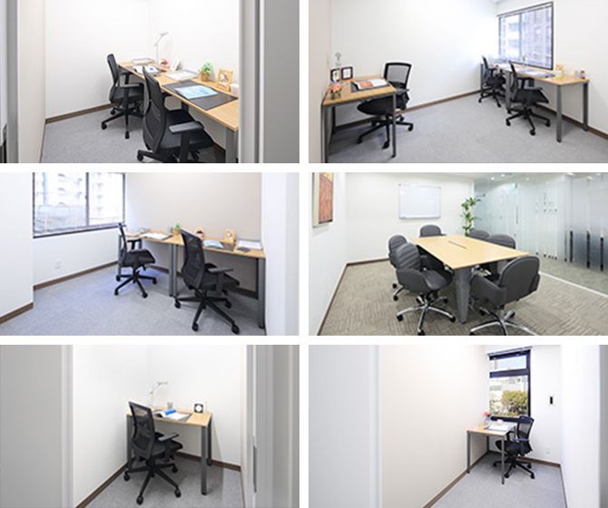

【個室レンタルオフィス】
オープンオフィス神戸三宮
オープンオフィス神戸三宮がNEW OPEN
オープンオフィス神戸三宮南センターは、神戸市中央区、JR「三ノ宮」駅、阪急・阪神「神戸三宮」駅からポートアイランド方面に進んだ磯辺通一丁目に位置します。周辺には神戸市役所など官公庁が集まり、またセンター周辺には駐車場も多く、高速道路へのアクセスも良好。公園や港も近く、人気の高い立地となっております。
オープンオフィス神戸三宮が提供するオフィスサービス
-
 高速インターネット＜光ファイバー＞
高速インターネット＜光ファイバー＞
- 100Mbpsの光ファイバーによるブロードバンド環境をご用意しました。各部屋に配線済みですので、パソコンに繋げばすぐLAN経由で高速インターネットを利用出来ます。
-
 ネットワーク・カラーレーザープリンタ+スキャナー
ネットワーク・カラーレーザープリンタ+スキャナー
- ネットワークを利用して、各お部屋のパソコンから印刷できます。プリンタをご用意いただく必要もございません。
スキャナー機能も搭載しております。
-
 カラーレーザーコピー
カラーレーザーコピー
- フロア内にご用意してあります。カード方式でコピーが出来ますので、小銭の準備が不要です。
-
 ICカードキーによる入室管理
ICカードキーによる入室管理
- 専用ICカードを使ったホテル式のスマートシステムを用いて、セキュリティーを向上させています。
-
 ミーティングルーム（会議室）
ミーティングルーム（会議室）
- 商談・会議にご利用いただける共有スペースをご用意しています。インターネットで簡単に予約をしていただけます。
-
 無線LAN（WiFi）
無線LAN（WiFi）
- 共有スペースとミーティングスペースにて、無線LAN(WiFi)サービスをご利用いただけます。

オープンオフィス神戸三宮の特徴

日本6大都市のひとつ、神戸市
官公庁、大手企業も集まるビジネス街
ハーバーランド、公園も至近に
重工業、医療、IT、アパレル業など集積
24時間利用可能
オフィス周辺のMap
オープンオフィス神戸三宮近隣のスポット
- ■銀行
- 三井住友銀行 三宮支店
みずほ銀行 神戸支店
阿波銀行 神戸支店
三菱東京UFJ銀行 三宮支店
りそな銀行 神戸支店 - ■レストラン
- 神戸牛ステーキ ishida. 三宮店
西村屋 ダイニング （日本料理）
セプ・ドール （フレンチ）
偉州亥 いすい （寿司）
神戸ステーキ＆ワイン Kitari - ■ホテル
- 神戸ポートピアホテル
ヴィラフォンテーヌ神戸三宮
神戸ベイシェラトンホテル＆タワーズ
神戸メリケンパークオリエンタルホテル
ホテルピエナ神戸
ホテルオークラ神戸
ANAクラウンプラザホテル神戸 - ■レジャー
- コナミスポーツクラブ三宮
東急スポーツオアシス三宮 - ■映画館
- ミント神戸
神戸松竹国際
オープンオフィス神戸三宮の住所・アクセス
- 住所:
- 兵庫県神戸市中央区磯辺通1-1-20 KOWAビル１F 3F
- 空港からのアクセス:
- 神戸空港から三宮駅までポートライナーで18分
関西国際空港から神戸（三宮）までリムジンバスで約60分 - 電車からのアクセス:
- JR「三ノ宮」駅、阪急・阪神「神戸三宮」駅、ポートライナー「三宮」駅から徒歩約11分
ポートライナー「貿易センター」駅から徒歩2分 - お車でのアクセス:
- 柾谷小路（万代橋通り・国道7号線、116号線）「鏡橋」交差点角
オープンオフィス神戸三宮のフロアマップ
1F

3F

※フロア内は禁煙です。
※こちらはイメージ図となりますので、状況が異なる場合は現況を優先させていただきます。
- ◆初回納入金
- 利用料1ヶ月分の保証金
- ◆共益費
- 水道光熱費、ビル共益費、ゴミ出し、フロア・トイレの清掃、共有部分の消耗品代を含みます。
リージャスグループの説明
リージャス・グループは、柔軟なワークスペースを提供する世界最大の企業です。そのネットワークは世界120カ国1,100都市、3300拠点に及びます。会員数は250万人で、業界で成功を収める大小様々な企業や起業家の方々にご利用いただいています。
リージャスは、個室タイプのレンタルオフィス、コワーキングスペースなど多彩なオフィスプラン、近年需要が高まるモバイルワークやバーチャルオフィス、障害復旧サービスの提供を通じ、お客様が予算やワークスタイルに合わせて仕事を行うことができる環境を提供いたします。